When a fire breaks out, the building changes by the second — hallways block, smoke fills, and the safe way out disappears.
Ignis simulates that changing world, so agents — people escaping and responders fighting the fire — can be trained and stress-tested across thousands of emergencies, and every run collected as data to build more robust response.
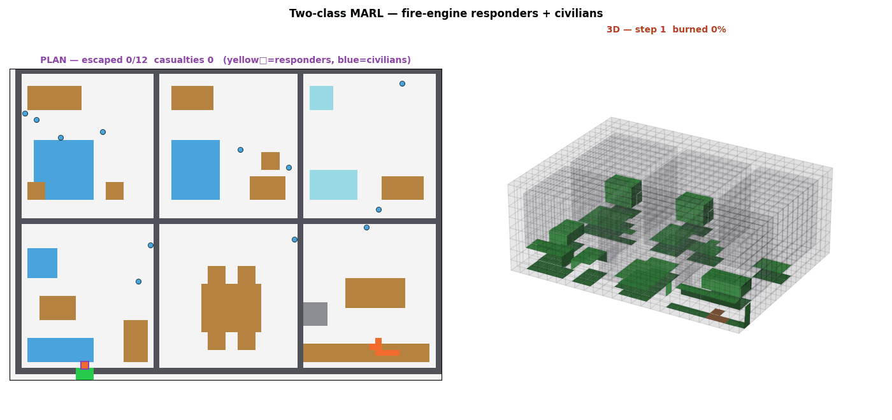
A path that was safe a moment ago is suddenly blocked by fire or smoke.
For anyone moving through the building — an occupant, a responder, a future rescue robot — a policy that worked yesterday can fail now, because the environment itself has changed. We wanted to study exactly how robust those decisions are during an emergency.
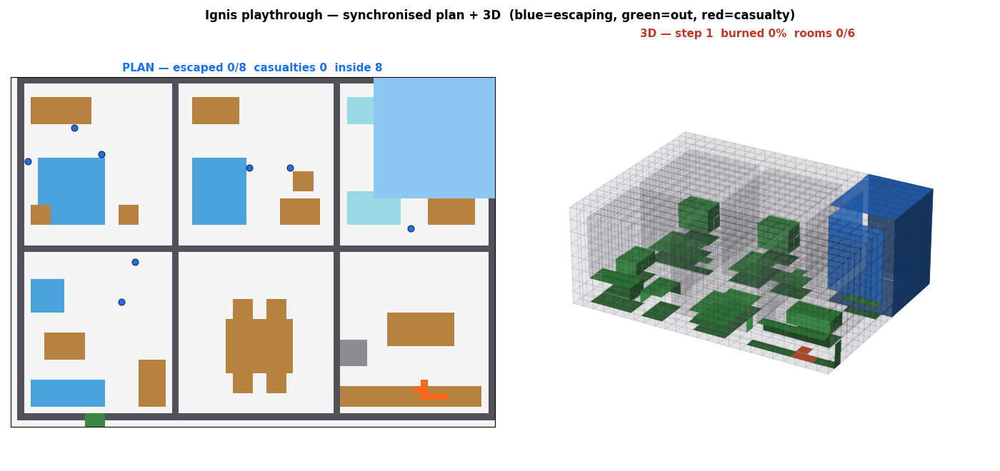
First, model how a fire spreads through a space over time.
A lightweight cellular automaton spreads fire by wind, slope, buoyancy and the materials it meets — cheap enough to run millions of times. As it grows, areas turn hazardous and routes get harder.
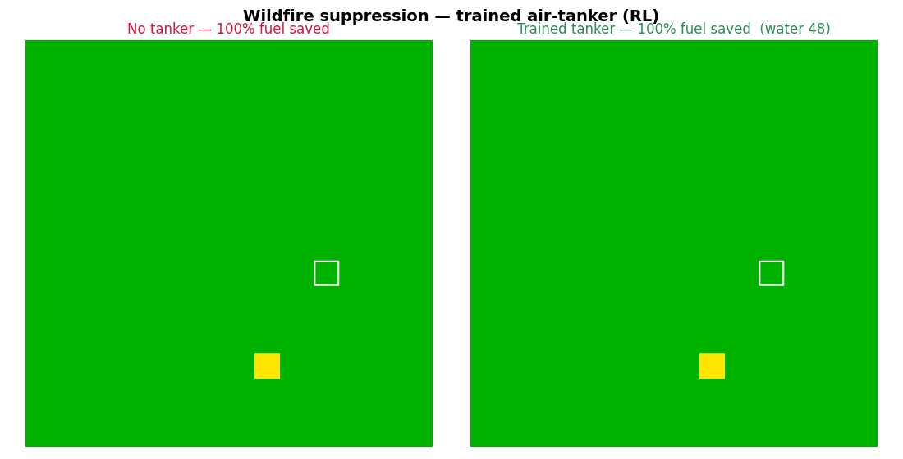
Every scenario is a single JSON config — geometry, obstacles, materials, ignition, budgets, exits:
{ "dims":[72,52,22], "cell_size_m":0.25, // 18×13×5.5 m
"walls":[{a,b,height,material}], // OBSTACLES → block spread + movement
"doors":[{at,width,height}], // carve openings
"furniture":[{bbox,z,material}], // fuel objects (ORDER matters)
"ignition":[[x,y,z]], "exits":[[x,y]], "budgets":{water,time} }
Build order: walls (obstacles) → carve doors → fill furniture (later overrides earlier) → fuel from material → ignition. Change the file, change the emergency.
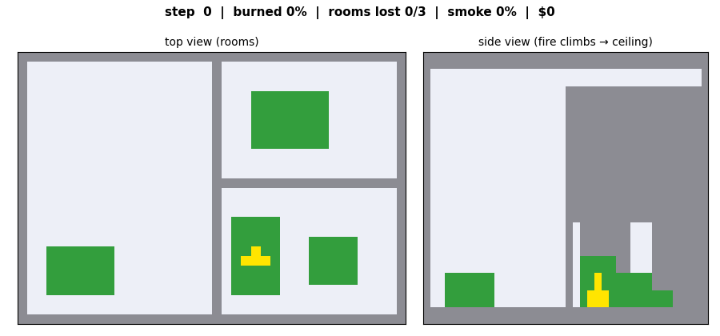
| material | blocks? | catches | burns | $ |
|---|---|---|---|---|
| concrete / steel / glass | yes | — | — | 6–12 |
| drywall | no | low | short | 3 |
| wood | no | med | long | 5 |
| fabric / foam | no | high | fast + smoky | 4 |
Each material sets how readily it ignites, how long it burns, and its value. That's the hook into building design — swap finishes or add compartments, then re-run.
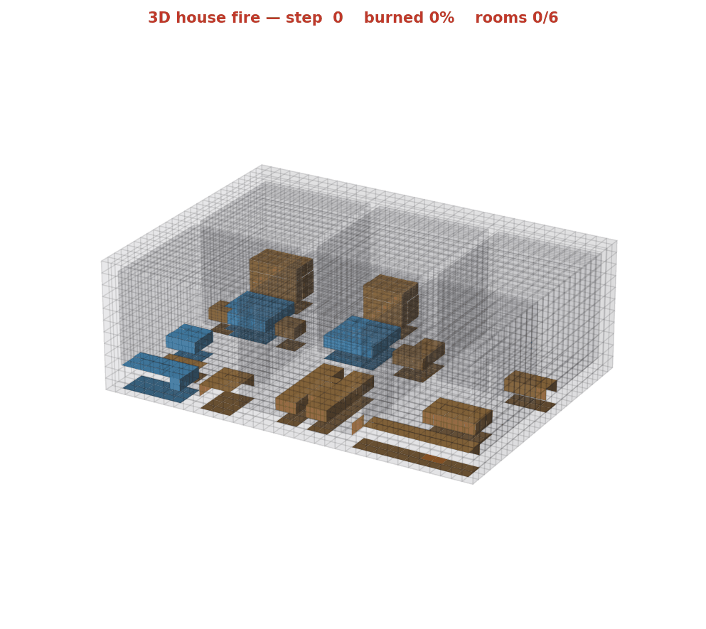
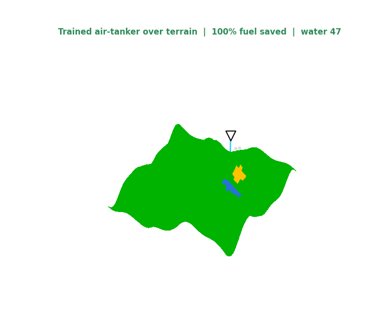
Different layouts, obstacle placements, blocked corridors and fire progressions — the same agents, endlessly re-tested.
| agent | trying to… | sees |
|---|---|---|
| Civilians | get out — fast & alive | fire-aware path to the nearest exit |
| Responders | knock the fire down, protect people | where the fire is burning + water left |
They share the same world but have different goals — a genuine multi-agent problem. Responders that keep an exit clear buy the civilians time.
Fight the fire R = fuel saved = 1 − burned / fuel₀
Get people out minimise casualties & escape time
Work together R = fuel saved + lives out − casualties
(lives weighted over property)
The cooperative reward is what makes responders learn to protect the escape route, not just chase the biggest flames.
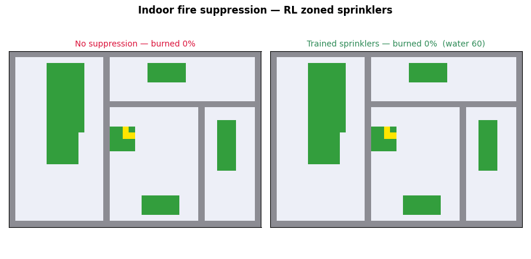
ASET — Available Safe Egress Time: how long until the building becomes untenable (from the fire).
RSET — Required Safe Egress Time: detect + react + walk to an exit (from the people).
Plus burned %, rooms lost, damage, casualties, escape time.
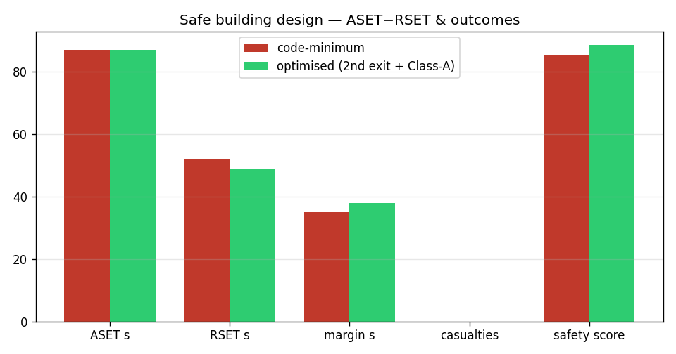
CEM — try many policies, keep the best, repeat (simple, tuning-free).
PPO — a neural policy nudged by reward gradients (classic deep RL).
Same environment, both work. Honestly, the simple CEM baseline edges PPO here — common on problems this small. A greedy oracle hits 100%, so the task is solvable and there's headroom.
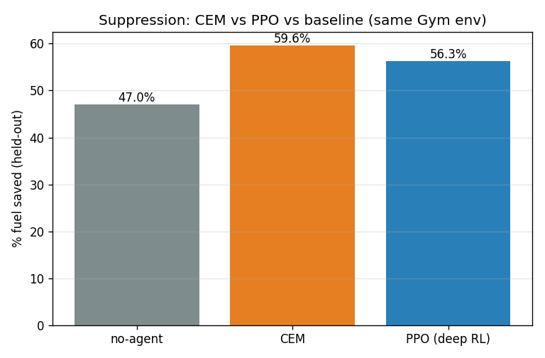
| scenario | baseline | trained |
|---|---|---|
| Wildfire flat / terrain | 42% / 64% | 98% / 99.6% |
| Indoor suppression | 47% | 60% fuel saved |
| Responders — casualties | 3.1 | 2.2 |
The learned responder puts lives over property — ~0.9 more people saved per run than a greedy baseline, by protecting the way out.
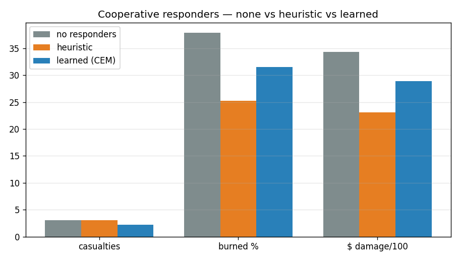
For every simulation we record the full picture: each agent's trajectory, speed, the path taken, where it fails, and the state of the fire when it does.
Run thousands and you get a dataset showing exactly which emergencies today's policies handle — and where they break. It exports in a VLGE-compatible shape, so it drops straight into agent tracking / telemetry pipelines for building more robust navigation and rescue robots.
Because it's all one config, you can edit the building — add an exit, upgrade a finish, add compartments — re-run the agents, and re-measure the safety margin.
Scored against California code (exits, sprinklers, Class-A materials). The optimised house is code-compliant with a bigger ASET−RSET margin than the code-minimum one.
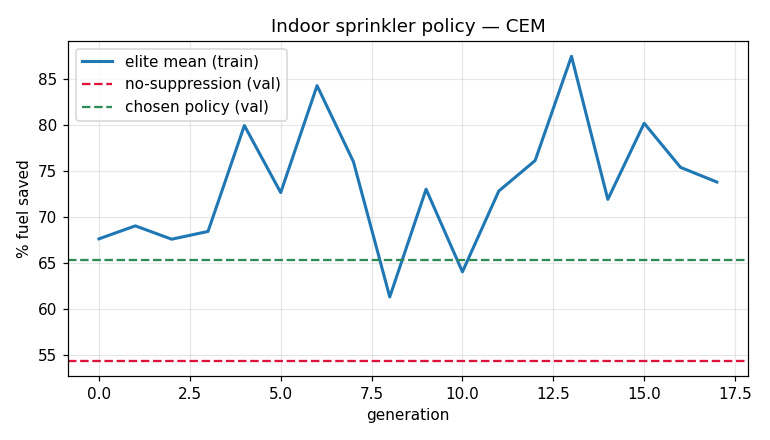
3-D fire, two agent classes, CEM + PPO, safety scoring, VLGE-compatible data — all on CPU, reproducible with one script, and a ready-made Gym environment.